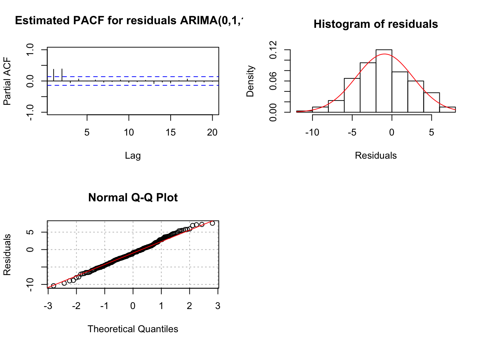

Chapter 17 ARIMA Model Building
17.1 Steps
The goal of this section is to show how one can go through the process of choosing the best model for a time series data set.
17.1.1 Model Building Process (steps 1-3 of 6 total steps)
- Construct plots of \(x_t\) vs. t and the estimated ACF to determine if the time series data is stationary
- If it is not stationary in the variance, make the appropriate transformation
- If it is not stationary in the mean, examine differences of \(x_t\)
- Use plots of \(x_t\) vs. t and the estimated ACF to determine if what you did worked.
- Construct plots of the estimated ACF and PACF of the stationary series (call it \(x_t\)).
- Match patterns in these plots with those of ARMA models.
- Determine a few models to investigate further.
- Find the estimated models using maximum likelihood estimation.
Example 17.1 AR(1) with \(\phi_1=0.7, \mu=0, \sigma_w^2=1\) (ar1_model_build.R)
Step 1.
ar1 <- read.table("AR1.0.7.txt", header = TRUE, sep = "")
x <- ar1$xplot(x=x, ylab = expression(x[t]), xlab = "t", type =
"l", col = "red", lwd = 1, main = "Plot of
AR1.0.7.txt data", panel.first=grid(col = "gray",
lty = "dotted"))
points(x = x, pch = 20, col = "blue") par(mfrow = c(1,2))
# Notice the xlim starts at 1
acf(x = x, type = "correlation", main = "Estimated ACF
for AR1.0.7.txt data", xlim = c(1,20), ylim = c(-1, 1))
pacf(x = x, lag.max = 20, main = "Estimated PACF for
AR1.0.7.txt data", xlim = c(1,20), ylim = c(-1,1))While the PACF plot is not needed here (Note that it’s usually not useful to look at PACF plots when the time series has not dealt with stationarity or seasonality issue, you’ll see it’s hard to interpret anything from such PACF plots. So whenever you have difficulty with PACF plots, just simply ignore it and look at the ACF plots only.), it is often nice to look at both functions in the next step. Notice that these plots start at lag = 1.
From examining the plot of the data over time and the estimated ACF plot, there is no evidence against the stationary assumption.
Step 2.
From examining the ACF and PACF plots above, it appears that an AR(1) model would be appropriate for the data. I am also going to examine a MA(1) model just to show what could happen if the “wrong” model is chosen.
Step 3.
# ARIMA(1,0,0)
mod.fit1 <- arima(x = x, order = c(1, 0, 0), include.mean
= TRUE)
mod.fit1##
## Call:
## arima(x = x, order = c(1, 0, 0), include.mean = TRUE)
##
## Coefficients:
## ar1 intercept
## 0.6854 -0.4322
## s.e. 0.0730 0.3602
##
## sigma^2 estimated as 1.336: log likelihood = -156.68, aic = 319.36# hat mu= -0.4322
# hat phi_1 =0.6854mod.fit1$coef## ar1 intercept
## 0.6853698 -0.4322225# the covariance matrix
# diagonal are variances
mod.fit1$var.coef## ar1 intercept
## ar1 0.005324151 0.001518125
## intercept 0.001518125 0.129723806z <- mod.fit1$coef/sqrt(diag(mod.fit1$var.coef))
p.value <- 2*(1-pnorm(q = abs(z), mean = 0, sd = 1))
data.frame(z, p.value)## z p.value
## ar1 9.392902 0.0000000
## intercept -1.200045 0.2301219#Could use confint() function too #ARIMA(0,0,1)
mod.fit2 <- arima(x = x, order = c(0, 0, 1), include.mean
= TRUE)
mod.fit2##
## Call:
## arima(x = x, order = c(0, 0, 1), include.mean = TRUE)
##
## Coefficients:
## ma1 intercept
## 0.5801 -0.4794
## s.e. 0.0661 0.1979
##
## sigma^2 estimated as 1.581: log likelihood = -164.99, aic = 335.98# hat theta_1=0.5801
# hat mu= -0.4794z <- mod.fit2$coef/sqrt(diag(mod.fit2$var.coef))
p.value <- 2*(1-pnorm(q = abs(z), mean = 0, sd = 1))
data.frame(z, p.value)## z p.value
## ma1 8.770337 0.0000000
## intercept -2.422093 0.0154314# You can see theta_1 is significantly different from 0
# but out data are simulated from AR1 w/o any MA terms17.1.2 Model Building Process (continued, Step 4.)
- For each model chosen, investigate diagnostic measures.
Examine the residuals to determine if they appear to be “white noise”.
Remember that \(w_t \sim ind (0,\sigma_w^2)\). The residuals \(\tilde w_t^n\) were introduced during the forecasting notes.
Examine an ACF plot of the residuals to determine if they appear to come from a white noise process.
If they do, then the model assumption about \(w_t \sim ind (0,\sigma_w^2)\) is satisfied.
If they do not, then changes need to be made to the model. There is an autocorrelation pattern in the \(x_t\) that has not been accounted for by the AR or MA terms. The changes that need to be made correspond to the autocorrelations on the ACF plot. In other words, the residual ACF plot can be used just like the ACF of the original data!
Why can this be done? The answer is coming up!
Examine a PACF plot of the residuals to determine if they appear to “white noise”.
If they do, then the model assumption about \(w_t \sim ind (0,\sigma_w^2)\) is satisfied.
If they do not, then changes need to be made to the model. The changes that need to be made correspond to the partial autocorrelations on the PACF plot. In other words, the residual PACF plot can be used just like the PACF of the original data!
Why can this be done?
Example 17.2 Examining the residuals
Suppose the residuals for
\[\phi_{p'}(1-B)^{d'}x_t=\theta_{q'}(B)b_t \tag 1\]
do not correspond to a white noise process. Note that the p’, q’, and d’ correspond to the AR operator order, MA operator order, and differencing order, respectively. Also the \(b_t\) term is not necessarily our white noise, but it plays as the error term.
Using the residual ACF and PACF, a new model for the \(b_t\) can be identified to be
\[\bar \phi_{p''}(1-B)^{d''}b_t=\bar \theta_{q''}(B)w_t \tag 2\]
Note that the bar over \(\phi\) and \(\theta\) is just to differentiate between the parameters in (1) and (2). Also, we now have actual white noise \(w_t\) left over.
Solving for \(b_t\) in (2) produces \(b_t=\frac{\bar \theta_{q''}(B)}{\bar \phi_{p''}(B)(1-B)^{d''}}w_t\) and substituting this into (1) produces
\[\phi_{p'}(B)(1-B)^{d''}x_t=\theta_{q'}(B)\frac{\bar \theta_{q''}(B)}{\bar \phi_{p''}(B)(1-B)^{d''}}w_t \\ \iff \phi_{p'}(B)\bar\phi_{p''}(B)(1-B)^{d'}(1-B)^{d''}x_t=\theta_{q'}(B)\bar\theta_{q''}(B)w_t\]
Suppose that a series is wrongly identified as ARIMA(0,1,1): \((1-B)x_t=(1+0.6B)b_t\).
Also, suppose examining the residuals identify the model ARIMA(0,0,1):\(b_t=(1-0.8B)w_t\).
The “identification” could be done by examining the residual ACF and PACF. In this case, the residual ACF has a spike at 1 and the PACF tails off to 0. Solving for \(b_t\) and substituting this into the wrongly identified model produces
\[(1-B)x_t=(1+0.6B)(1-0.8B)w_t\\ \iff (1-B)x_t=(1-0.2B-0.48B^2)w_t\]
Thus the new model is ARIMA(0,1,2).
Examine the standardized residuals for outliers.
Standardized residuals:
\[e_t=\frac{x_t-\tilde x^n_t}{\sqrt{\hat Var(x_t-\tilde x^n_t)}}=\frac{x_t-\tilde x^n_t}{\hat \sigma_w}\]
where \(\tilde x^n_t\) is the predicted value of \(x_t\) for time t using the model.
Some individuals may refer to \(\tilde x^n_t\) as \(\tilde x^{t-1}_t\) because only the previous t – 1 \(x_t\)’s are used directly to calculate the predicted value. However, the model parameters are based on all of the observations so I prefer to use \(\tilde x^n_t\).
If the correct model is chosen, these standardized residuals should approximately follow a \(N(0,1)\) distribution. Thus, we would expect about 95% of them to fall within \(\pm 2\) and about 99% to fall within \(\pm 3\). Standardized residuals falling outside of this range indicate the correct model may not have been chosen.
If needed, special model terms can be introduced into a time series model to account for these outliers. For example, special cases of transfer function models can be used.
Note that some individuals will refer to residuals as “innovations” in time series analysis.
Plot the standardized residuals (or residuals) vs. time.
This is another method to determine if there is autocorrelation among the standardized residuals.
Perform the Ljung-Box-Pierce test to determine if there is evidence against the \(w_t\) independent assumption.
This performs a hypothesis test on a group of residual autocorrelations.
\(H_0: \rho_e(1)=\rho_e(2)=...=\rho_e(H)=0\)
\(H_a:\) Not all 0
where \(\rho_e(h)\) for h = 1, …, H is the autocorrelation for the \(e_t\)’s.
If you do reject \(H_0\), this indicates that independence assumption of \(w_t\) is violated.
Many different values of H are chosen to provide more than one hypothesis test. Some textbooks suggest performing a test with H = 20.
The test statistic for the Ljung-Box-Pierce hypothesis test is
\[Q=n(n+2)\sum_{h=1}^{H}\frac{\hat\rho_e^2(h)}{n-h}\]
Under the assumption that the null hypothesis is true, \(Q \sim \chi^2_{H-p-q}\)for large n.
If \(Q > \chi^2_{H-p-q, 1-\alpha}\), then the null hypothesis is rejected and other models should be examined.
If \(Q \le \chi^2_{H-p-q, 1-\alpha}\), then there is not sufficient evidence against the null hypothesis. There is not enough evidence that the model should be changed. This is what you want to happen if you are satisfied with your model!
The direct function in R to perform the test is Box.test(). By specifying the argument, type = "Ljung-Box", the Ljung-Box-Pierce hypothesis test is performed for a specified number of lags using the lag = argument. By default, the Box-Pierce is performed where type = "Box-Pierce". Its test statistic is
\(Q=n\sum_{h=1}^{H}\hat\rho_e^2(h)\)
Under the assumption that the null hypothesis is true, \(Q \sim \chi^2_{H-p-q}\) for large n. Box, Jenkins, and Reinsel’s work suggest the Ljung-Box-Pierce test statistic is better approximated by the \(\chi^2\) distribution than the Box-Pierce test.
Note that the tsdiag() (time series diagnostic) function to be discussed soon will perform the Ljung-Box-Pierce hypothesis test automatically along with calculating other items.
Examine the normality assumption for the \(w_t\) by constructing histograms and Q-Q plots of the residuals or standardized residuals.
The Q-Q plot is a plot of the ordered residuals versus ordered quantiles from a normal distribution. If the points fall on a straight line, this suggests the normality assumption is satisfied. If they do not, then the normality assumption may be violated.
The histogram can be plotted with a normal distribution overlay to assess normality. If there is evidence against the normality assumption (for example, histogram has large deviations from the normal distribution overlay), investigate similar transformations as previously done to solve nonstationary variance problems (For example, taking log).
Perform hypothesis tests for \(\phi_i=0\) and \(\theta_j=0\) parameters.
If the test does not reject these hypotheses, then a different model may be needed.
Examine the various diagnostic measures in an iterative manner until at least one model satisfies all of the model assumptions!
Example 17.3 AR(1) with \(\phi_1=0.7, \mu=0, \sigma_w^2=1\) (ar1_model_build.R)
Step 4.
AR(1) model:
Note that the first plot: std. residuals vs. time can be used to detect outliers. Be careful if many std. residuals reach \(\pm 3\). This plot can also be used to examine independence of std. residuals, so you don’t want to see significant pattern in this plot.
For the second plot: ACF of Residuals, notice that \(\rho_e(0)=1\) as always.
For the third plot: p values for Ljung-Box statistic, these are testing, for example, say you look at lag=15, i.e. H=15, \(H_0: \rho_e(1)=...=\rho_e(15)=0\). So large p-values means you’re fine.
tsdiag(object = mod.fit1, gof.lag = 20)#Could also get the Ljung-Box-Pierce test this way.
Box.test(mod.fit1$residuals, lag=20, type = "Ljung-Box")##
## Box-Ljung test
##
## data: mod.fit1$residuals
## X-squared = 21.256, df = 20, p-value = 0.3822#Box-Pierce test
Box.test(mod.fit1$residuals, lag=20)##
## Box-Pierce test
##
## data: mod.fit1$residuals
## X-squared = 18.693, df = 20, p-value = 0.5419par(mfrow = c(2,2))
pacf(x = mod.fit1$residuals, lag.max = 20, main =
"Estimated PACF for residuals using ARIMA(1,0,0) fit",
xlim = c(1,20), ylim = c(-1,1))
hist(x = mod.fit1$residuals, main = "Histogram of
residuals", xlab = "Residuals", freq = FALSE, col = NA)
curve(expr = dnorm(x, mean = mean(mod.fit1$residuals),
sd = sd(mod.fit1$residuals)), col = "red", add =
TRUE)
qqnorm(y = mod.fit1$residuals, ylab = "Residuals",
panel.first = grid(col = "gray", lty = "dotted"))
qqline(y = mod.fit1$residuals, col = "red")
par(mfrow = c(1,1)) # set back to original setting# MA(1)
tsdiag(object = mod.fit2, gof.lag = 20)par(mfrow = c(2,2))
pacf(x = mod.fit2$residuals, lag.max = 20, main =
"Estimated PACF for residuals using ARIMA(0,0,1)
fit", xlim = c(1,20), ylim = c(-1,1))
hist(x = mod.fit2$residuals, main = "Histogram of
residuals", xlab = "Residuals", freq = FALSE, col = NA)
curve(expr = dnorm(x, mean = mean(mod.fit2$residuals),
sd = sd(mod.fit2$residuals)), col = "red", add = TRUE)
qqnorm(y = mod.fit2$residuals, ylab = "Residuals",
panel.first = grid(col = "gray", lty = "dotted"))
qqline(y = mod.fit2$residuals, col = "red")
par(mfrow = c(1,1))Notes:
- Everything appears to be fine with the AR(1) model. There is a significant (barely) partial autocorrelation at lag 5. There are some people who will fit a model of the form:
\(x_t = \phi_1x_{t-1} + \phi_5x_{t-5} + w_t.\)
Notice that \(\phi_2, \phi_3, \phi_4\) are assumed to be 0 here. I prefer not to do this unless there is a known “seasonality” to the data. We will discuss seasonal ARIMA (SARIMA) models later in the course.
- Similar to the previous note, there is a barely significant autocorrelation at lag 5. Some people may add a \(\theta_5w_{t-5}\) to the model, but I recommend against it unless there is a seasonality aspect to it.
- Problems with the MA(1) model were detected. There are some autocorrelations and partial autocorrelations found to be not 0. The Ljung-Box-Pierce hypothesis test also detects some autocorrelations are not 0.
- On p. 4 in the notes, I performed a test of \(H_0:\phi_1=0\) vs. \(Ha:\phi_1\ne 0\) and the test rejects \(H_0\). The test statistic was
\(Z=\frac{\hat \phi_1-0}{\sqrt{\hat Var(\hat \phi_1)}}=\frac{0.6854}{0.0730}=9.39\)
- On p. 5 in the notes, I performed a test of \(H_0:\theta_1=0\) vs. \(Ha:\theta_1\ne 0\) and the test rejects \(H_0\). The test statistic was
\(Z=\frac{\hat \theta_1-0}{\sqrt{\hat Var(\hat \theta_1)}}=\frac{0.5801}{0.0661}=8.770\)
What if you do not reject?
The number of lags displayed on the plot of the Ljung-Box-Pierce test p-values can be changed using the
gof.lagargument intsdiag(). Unfortunately, there is not an argument to control the lags displayed for the ACF plot produced bytsdiag().
17.1.3 Model Building Process(continued, Step 5.)
- Using each model that gets through Step 4., pick the best model based upon model parsimony and the AIC. The best model corresponds to the one with the smallest number of AR and MA parameters and the smallest AIC.
Principle of parsimony – choose the model with the smallest number of parameters
Akaike’s information criterion (AIC)
The AIC is
\(-2 \mathcal l(\boldsymbol{\hat \phi}, \boldsymbol{\hat \theta}, \hat \mu, \hat \sigma_w^2| \boldsymbol{\tilde w})+2\times\)(# of parameters estimating)
where \(\mathcal l(\boldsymbol{\hat \phi}, \boldsymbol{\hat \theta}, \hat \mu, \hat \sigma_w^2| \boldsymbol{\tilde w})\) is the log-likelihood evaluated with parameter estimates and \(\boldsymbol{\tilde w}\) is a vector of the estimated w’s (residuals).
Because the likelihood function is a measurement of “how plausible” a set of parameter estimates are, a criteria of model fit is to have \(\mathcal l(\boldsymbol{\hat \phi}, \boldsymbol{\hat \theta}, \hat \mu, \hat \sigma_w^2| \boldsymbol{\tilde w})\) be as large as possible. Multiplying by -2 means we want \(-2\mathcal l(\boldsymbol{\hat \phi}, \boldsymbol{\hat \theta}, \hat \mu, \hat \sigma_w^2| \boldsymbol{\tilde w})\) to be as small as possible.
The \(2 \times\)(# of parameters estimating) part serves as a “penalty” for the number of parameters in the model. This is needed because generally \(\mathcal l(\boldsymbol{\hat \phi}, \boldsymbol{\hat \theta}, \hat \mu, \hat \sigma_w^2| \boldsymbol{\tilde w})\) can be made larger by adding more parameters (more AR or MA terms).
In summary, the model with the smallest AIC is the “best” model to use (according to this criteria).
Because models are fit to the same data set, there are some parts of the likelihood function that will be the same for each model. This will cause some software packages (and packages within R) to drop these parts of the likelihood function in the calculation of the AIC. Thus, different software packages can result in different AIC values so please be careful in comparing them across software packages!
- Forecast error: choose the model that does the best with forecasting
Choose the model that has the smallest forecast error. How can you do this if the future values are not known?
Estimate the model without the last c observations where c < n. Forecast the c observations and find the mean square error. The smallest MSE corresponds to the best model using this criterion.
Problem: You are no longer using all of your observations in the model.
Example 17.4 AR(1) with \(\phi_1=0.7, \mu=0, \sigma_w^2=1\) (ar1_model_build.R)
Step 5.
Because the MA(1) model did not “pass” the various diagnostic tests, the model should not be considered further. For illustrative purposes, I am considering it further here.
Both models have the same number of AR and MA parameters so parsimony cannot be used to choose between the models.
The AIC was shown previously in the R output for the arima() function. Below are the AIC values again by extracting parts of the model fit object.
mod.fit1$aic## [1] 319.363-2*mod.fit1$loglik+2*3## [1] 319.363mod.fit2$aic## [1] 335.9806According to this criterion, the AR(1) model is the best because it has the lowest value.
# Other models, feel free to ignore
#ARIMA(1,0,2)
mod.fit3 <- arima(x = x, order = c(1, 0, 2), include.mean = TRUE)
mod.fit3##
## Call:
## arima(x = x, order = c(1, 0, 2), include.mean = TRUE)
##
## Coefficients:
## ar1 ma1 ma2 intercept
## 0.5563 0.1938 0.0835 -0.4434
## s.e. 0.1481 0.1648 0.1201 0.3254
##
## sigma^2 estimated as 1.313: log likelihood = -155.85, aic = 321.7tsdiag(object = mod.fit3, gof.lag = 20)par(mfrow = c(2,2))
pacf(x = mod.fit3$residuals, lag.max = 20, main = "Estimated PACF for residuals using ARIMA(1,0,2) fit", xlim = c(1,20), ylim = c(-1,1))
hist(x = mod.fit3$residuals, main = "Histogram of residuals",
xlab = "Residuals", freq = FALSE, col = NA)
curve(expr = dnorm(x, mean = mean(mod.fit3$residuals), sd = sd(mod.fit3$residuals)), col = "red", add = TRUE)
qqnorm(y = mod.fit3$residuals, ylab = "Residuals", panel.first = grid(col = "gray", lty = "dotted"))
qqline(y = mod.fit3$residuals, col = "red")
par(mfrow = c(1,1))mod.fit3$aic## [1] 321.7001# no better than mod.fit1 as it should be17.2 Example
The goal of this section is to show how one can go through the process of choosing the best model for a time series data set.
Example 17.5 ARIMA(1,1,1) with \(\phi_1=0.7, \theta_1=0.4, \sigma_w^2=9, n=200\) (arima111_model_build.R, examine.mod.R)
- Construct plots of \(x_t\) vs. t and the estimated ACF to determine if the time series data is stationary
arima111 <- read.csv("arima111.csv")
head(arima111)## time x
## 1 1 -143.2118
## 2 2 -142.8908
## 3 3 -138.0634
## 4 4 -133.5038
## 5 5 -132.7496
## 6 6 -132.2910x <- arima111$x# step 1 and 2
# Plot of the data
par(mfrow=c(1,1))
plot(x = x, ylab = expression(x[t]), xlab = "t", type =
"l", col = "red", main = "Plot of the
arima111.csv data", panel.first = grid(col = "gray",
lty = "dotted"))
points(x = x, pch = 20, col = "blue")#ACF and PACF of x_t
par(mfrow = c(1,2))
acf(x = x, type = "correlation", lag.max = 20, xlim =
c(1,20), ylim = c(-1,1), main = "Estimated ACF of the
arima111.csv data")
pacf(x = x, lag.max = 20, xlim = c(1,20), ylim =
c(-1,1), xlab = "h", main = "Estimated PACF of the
arima111.csv data")par(mfrow = c(1,1))The data appears to be nonstationary in the mean because there is a linear trend in the \(x_t\) vs. t plot and the autocorrelations are going to 0 very slowly. Below is what happens after the first differences are taken.
#Examine the first differences
plot(x = diff(x = x, lag = 1, differences = 1), ylab =
expression(x[t]-x[t-1]), xlab = "t", type = "l", col
= "red", main = "Plot of the 1st differences for
arima111.csv data", panel.first = grid(col = "gray",
lty = "dotted"))
points(x = diff(x = x, lag = 1, differences = 1), pch =
20, col = "blue")#ACF and PACF of x_t - x_t-1
par(mfrow = c(1,2))
acf(x = diff(x = x, lag = 1, differences = 1), type =
"correlation", lag.max = 20, xlim = c(1,20), ylim =
c(-1,1), main = "Est. ACF 1st diff. for arima111.csv
data")
pacf(x = diff(x = x, lag = 1, differences = 1), lag.max
= 20, xlim = c(1,20), ylim = c(-1,1), xlab = "h",
main = "Est. PACF 1st diff. for arima111.csv data")par(mfrow = c(1,1))The data now appears to be stationary in the mean. Also, there appears to be no evidence against constant variance.
- Construct plots of the estimated ACF and PACF of the stationary series.
The plots are above. The ACF is tailing off toward 0 after q = 1 lags. The PACF may also be tailing off toward 0 after p = 1 lags. This would be indicative of an ARMA(1,1,1) model.
Other possible models include:
- ARIMA(2,1,0) or ARIMA(3,1,0) because the PACF possibly cuts off to 0 after lag 2 or 3.
- Try simple models such as ARIMA(1,1,0) or ARIMA(0,1,1) to see if ACF and PACF plots of the model residuals help determine what types of changes should be made to the model. This is often a very good strategy to follow when it is not obvious from an ACF or PACF what the model should be.
Find the estimated models using maximum likelihood estimation AND
For each model chosen, investigate diagnostic measures.
To help perform Step 4. correctly, I wrote a function called examine.mod() which automatically does most of R parts needed. The function puts together the code that was used in the AR(1) data example. You will need to run the entire function first before using it! Below is the codes of the function.
examine.mod <- function(mod.fit.obj, mod.name, max.lag = 20) {
z <- mod.fit.obj$coef/sqrt(diag(mod.fit.obj$var.coef))
p.value <- 2*(1-pnorm(q = abs(z), mean = 0, sd = 1))
# dev.new(width = 8, height = 6, pointsize = 10)
tsdiag(object = mod.fit.obj, gof.lag = max.lag)
mtext(text = paste("Model is", mod.name), side = 1, line = 3,
at = 1, col = "red", adj = 0)
# dev.new(width = 8, height = 6, pointsize = 10)
par(mfrow = c(2,2))
pacf(x = as.numeric(mod.fit.obj$residuals), lag.max = max.lag,
main = paste("Estimated PACF for residuals", mod.name),
xlim = c(1,max.lag), ylim = c(-1,1))
hist(x = mod.fit.obj$residuals, main = "Histogram of residuals",
xlab = "Residuals", freq = FALSE, col = NA)
curve(expr = dnorm(x, mean = mean(mod.fit.obj$residuals),
sd = sd(mod.fit.obj$residuals)), col = "red", add = TRUE)
qqnorm(y = mod.fit.obj$residuals, ylab = "Residuals",
panel.first = grid(col = "gray", lty = "dotted"))
qqline(y = mod.fit.obj$residuals, col = "red")
par(mfrow = c(1,1))
list(z = z, p.value = p.value)
}The mtext() function means margin text.
ARIMA(1,1,1)
source("examine.mod.R")mod.fit111 <- arima(x=x, order=c(1,1,1))
mod.fit111##
## Call:
## arima(x = x, order = c(1, 1, 1))
##
## Coefficients:
## ar1 ma1
## 0.6720 0.4681
## s.e. 0.0637 0.0904
##
## sigma^2 estimated as 9.558: log likelihood = -507.68, aic = 1021.36save.it <- examine.mod(mod.fit.obj = mod.fit111, mod.name = "ARIMA(1,1,1)", max.lag=20)save.it## $z
## ar1 ma1
## 10.545076 5.177294
##
## $p.value
## ar1 ma1
## 0.000000e+00 2.251269e-07ARIMA(2,1,0)
# ARIMA(2,1,0)
mod.fit210 <- arima(x = x, order = c(2,1,0))
mod.fit210##
## Call:
## arima(x = x, order = c(2, 1, 0))
##
## Coefficients:
## ar1 ar2
## 1.0137 -0.2371
## s.e. 0.0690 0.0691
##
## sigma^2 estimated as 9.97: log likelihood = -511.8, aic = 1029.59# Need to run function in examine.mod.R file first
examine.mod(mod.fit.obj = mod.fit210, mod.name = "ARIMA(2,1,0)", max.lag = 20)## $z
## ar1 ar2
## 14.701106 -3.431004
##
## $p.value
## ar1 ar2
## 0.0000000000 0.0006013512ARIMA(3,1,0)
#ARIMA(3,1,0)
mod.fit310 <- arima(x=x, order=c(3,1,0))
mod.fit310##
## Call:
## arima(x = x, order = c(3, 1, 0))
##
## Coefficients:
## ar1 ar2 ar3
## 1.0627 -0.4436 0.2010
## s.e. 0.0697 0.0985 0.0697
##
## sigma^2 estimated as 9.565: log likelihood = -507.73, aic = 1023.46examine.mod(mod.fit.obj = mod.fit310, mod.name =
"ARIMA(3,1,0)", max.lag = 20)## $z
## ar1 ar2 ar3
## 15.251132 -4.501187 2.883806
##
## $p.value
## ar1 ar2 ar3
## 0.000000e+00 6.757493e-06 3.929004e-03Model notes:
- ARIMA(1,1,1)
- Ljung-Box-Pierce test does not indicate any significant groups of autocorrelations.
- ACF and PACF plots do not exhibit any significant values.
- There are a few standardized residuals outside of the -1.96 and 1.96 range, but still < 3.
- The normality assumption appears to be satisfied because the normal distribution appears to fit the histogram of residuals well.
- The hypothesis test for \(\phi_1=0\) and \(\theta_1=0\) results in
- Ljung-Box-Pierce test does not indicate any significant groups of autocorrelations.
| Test statistic | P-value | |
|---|---|---|
| \(\phi_1\) | 10.54 | <0.0001 |
| \(\theta_1\) | 5.18 | \(2.3\times 10^{-7}\) |
Because the p-values are small, there is sufficient evidence to indicate that \(\phi_1\ne 0\) and \(\theta_1\ne 0\).
- ARIMA(2,1,0)
- Ljung-Box-Pierce test indicates marginally significant groups of autocorrelations for H = 2 to 6.
- The ACF plot has a marginally significant value at lag 2. The PACF plot has a marginally significant value at lag 2. This indicates that an additional AR or MA term may need to be added to the model.
- There are a few standardized residuals outside of the -1.96 and 1.96 range with one close to -3.
- The normality assumption appears to be satisfied because the normal distribution appears to fit the histogram of residuals well.
- The test for \(\phi_i = 0\) results in
| Test statistic | P-value | |
|---|---|---|
| \(\phi_1\) | 14.70 | <0.0001 |
| \(\phi_2\) | -3.43 | 0.0006 |
Because the p-values are small, there is sufficient evidence to indicate that \(\phi_1 \ne 0\) and \(\phi_2 \ne 0\).
- ARIMA(3,1,0)
- Ljung-Box-Pierce test does not indicate any significant groups of autocorrelations.
- ACF and PACF plots do not exhibit any significant values.
- There are a few standardized residuals outside of the -1.96 and 1.96 range with two close to -3.
- The normality assumption appears to be satisfied because the normal distribution appears to fit the histogram of residuals well.
- The test for \(\phi_i = 0\) results in
- Ljung-Box-Pierce test does not indicate any significant groups of autocorrelations.
| Test statistic | P-value | |
|---|---|---|
| \(\phi_1\) | 15.25 | <0.0001 |
| \(\phi_2\) | -4.50 | \(6.8\times 10^{-6}\) |
| \(\phi_3\) | 2.88 | 0.0039 |
Because the p-values are small, there is sufficient evidence to indicate that \(\phi_1 \ne 0\), \(\phi_2\ne 0\), and \(\phi_3\ne 0\).
Summary: Both the ARIMA(1,1,1) and ARIMA(3,1,0) models appear to be better than the ARIMA(2,1,0) model. The ARIMA(1,1,1) model may be a “little” better than the ARIMA(3,1,0) model due to the examination of the standardized residuals.
Suppose I tried an ARIMA(1,1,0) model with the hope that the residual ACF and PACF plots help suggest changes to the model. Below are the plots and other summary measures.
#ARIMA(1,1,0)
mod.fit110 <- arima(x=x, order=c(1,1,0))
mod.fit110##
## Call:
## arima(x = x, order = c(1, 1, 0))
##
## Coefficients:
## ar1
## 0.8180
## s.e. 0.0398
##
## sigma^2 estimated as 10.57: log likelihood = -517.51, aic = 1039.02examine.mod(mod.fit.obj = mod.fit110, mod.name =
"ARIMA(1,1,0)", max.lag = 20)
## $z
## ar1
## 20.52674
##
## $p.value
## ar1
## 0Both the ACF and PACF plots have possibly significant values at lag = 1 and 2. The problem is knowing if these are signs of cutting off or tailing off and where does the tailing off start. If the PACF was tailing off to 0 starting at lag 1, the significant ACF value(s) would indicate correctly that a MA term was needed.
Suppose I tried an ARIMA(0,1,1) model with the hope that the residual ACF and PACF plots help suggest changes to the model. Below are the plots and other summary measures.
# ARIMA(0,1,1)
mod.fit011 <- arima(x=x, order = c(0,1,1))
mod.fit011##
## Call:
## arima(x = x, order = c(0, 1, 1))
##
## Coefficients:
## ma1
## 0.8371
## s.e. 0.0321
##
## sigma^2 estimated as 13.6: log likelihood = -542.67, aic = 1089.35examine.mod(mod.fit.obj = mod.fit011, mod.name =
"ARIMA(0,1,1)", max.lag = 20)
## $z
## ma1
## 26.05175
##
## $p.value
## ma1
## 0Notice the pattern among the standardized residuals indicating dependence still exists among them. There are significant partial autocorrelations at lag 1 and 2 and they are non-significant after lag 2. The ACF appears to be tailing off to 0 (maybe, although lag 2 is greater than lag 1). This suggests that AR terms may need to be added to the model. If \(\phi_1\) is added, the results shown for ARIMA(1,1,1) earlier are found. Normally, I would add only one term at a time. However, given the PACF here, it may be reasonable to add both \(\phi_1\) and \(\phi_2\) to the model:
mod.fit211 <- arima(x = x, order = c(2, 1, 1))
mod.fit211##
## Call:
## arima(x = x, order = c(2, 1, 1))
##
## Coefficients:
## ar1 ar2 ma1
## 0.3636 0.2926 0.7394
## s.e. 0.1431 0.1329 0.1107
##
## sigma^2 estimated as 9.365: log likelihood = -505.69, aic = 1019.38examine.mod(mod.fit.obj = mod.fit211, mod.name =
"ARIMA(2,1,1)", max.lag = 20)## $z
## ar1 ar2 ma1
## 2.541126 2.202129 6.676701
##
## $p.value
## ar1 ar2 ma1
## 1.104961e-02 2.765621e-02 2.443801e-11The tests for \(\phi_1\) and \(\phi_2 = 0\) result in somewhat marginally significant p-values. Thus, it is difficult to decide whether or not to include both in the model. Generally, one will build the models in a hierarchical manner so that if \(\phi_2\) is in the model then \(\phi_1\) will also be in the model. The main time when this generality is not done is in the case of seasonal dependence (for example, data is collected quarterly) and models for that situation will be discussed later in the course.
Note that the Ljung-Box-Pierce test results in no reject \(H_0\)’s.
- Using each model that gets through Step 4., pick the best model based upon model parsimony and the AIC. The best model corresponds to the one with the smallest number of AR and MA terms and the smallest AIC.
- Akaike’s information criterion (AIC)
Although all of the models in the table below did not satisfy the model assumptions, I decided to present all of the AIC values for illustrative purposes. Normally, I would have only examined the AIC for the ARIMA(1,1,1), ARIMA(3,1,0), and ARIMA(2,1,1) models.
data.frame(mod.name = c("ARIMA(1,1,1)", "ARIMA(2,1,0)",
"ARIMA(3,1,0)", "ARIMA(1,1,0)", "ARIMA(0,1,1)",
"ARIMA(2,1,1)"),
AIC = c(mod.fit111$aic, mod.fit210$aic, mod.fit310$aic,
mod.fit110$aic, mod.fit011$aic, mod.fit211$aic))## mod.name AIC
## 1 ARIMA(1,1,1) 1021.360
## 2 ARIMA(2,1,0) 1029.591
## 3 ARIMA(3,1,0) 1023.459
## 4 ARIMA(1,1,0) 1039.015
## 5 ARIMA(0,1,1) 1089.346
## 6 ARIMA(2,1,1) 1019.383Notice that the ARIMA(2,1,1) model has the lowest AIC! This model appeared to satisfy all of the model’s assumptions so this is the best model to use (according to AIC).
The ARIMA(1,1,1) model also has a low AIC. Because the data was simulated from this type of model, one would expect this AIC to be the lowest! Generally, this should happen.
There is some justification for using the ARIMA(1,1,1) model over the ARIMA(2,1,1) model. Because the ARIMA(1,1,1) has less parameters and the model assumptions were satisfied, this may be the better model to use. Also, remember the marginally significant result for the \(\phi_2 = 0\) test.
Which model should you choose? There is sufficient justification for both models. One could also examine the MSE of forecasts for a number of the last observations to help make a decision as well.
Once you choose the model, state it as “ARIMA(p,d,q)” and written out with the estimated parameters.
What if included the \(\delta\) term in the model?
- I tried this with a few of the best models found above and received very similar results. The \(\delta\) term is marginally significant. Please see the program for the actual code used to investigate the addition of \(\delta\) term.
#ARIMA(1,1,1)
mod.fit111.delta <- arima(x = x, order = c(1, 1, 1), xreg = 1:length(x))
mod.fit111.delta##
## Call:
## arima(x = x, order = c(1, 1, 1), xreg = 1:length(x))
##
## Coefficients:
## ar1 ma1 1:length(x)
## 0.6382 0.4826 -1.6847
## s.e. 0.0671 0.0894 0.8815
##
## sigma^2 estimated as 9.404: log likelihood = -506.03, aic = 1020.05examine.mod(mod.fit.obj = mod.fit111.delta, mod.name = "ARIMA(1,1,1) with delta", max.lag = 20)## $z
## ar1 ma1 1:length(x)
## 9.510494 5.400756 -1.911036
##
## $p.value
## ar1 ma1 1:length(x)
## 0.000000e+00 6.636063e-08 5.599999e-02#ARIMA(2,1,1)
mod.fit211.delta <- arima(x = x, order = c(2, 1, 1), xreg = 1:length(x))
mod.fit211.delta##
## Call:
## arima(x = x, order = c(2, 1, 1), xreg = 1:length(x))
##
## Coefficients:
## ar1 ar2 ma1 1:length(x)
## 0.3580 0.2657 0.7293 -1.6667
## s.e. 0.1463 0.1347 0.1151 0.9772
##
## sigma^2 estimated as 9.247: log likelihood = -504.39, aic = 1018.78examine.mod(mod.fit.obj = mod.fit211.delta, mod.name = "ARIMA(2,1,1) with delta", max.lag = 20)
## $z
## ar1 ar2 ma1 1:length(x)
## 2.446715 1.972754 6.337217 -1.705630
##
## $p.value
## ar1 ar2 ma1 1:length(x)
## 1.441647e-02 4.852364e-02 2.339517e-10 8.807701e-02z <- mod.fit211.delta$coef/sqrt(mod.fit211.delta$var.coef)## Warning in sqrt(mod.fit211.delta$var.coef): NaNs producedz## ar1 ar2 ma1 1:length(x)
## ar1 2.446715 NaN NaN NaN
## ar2 NaN 1.972754 2.302216 7.217869
## ma1 NaN 6.319660 6.337217 23.288570
## 1:length(x) NaN -45.276546 -53.218112 -1.705630pvalues <- 2*(1-pnorm(q = abs(z)))
pvalues## ar1 ar2 ma1 1:length(x)
## ar1 0.01441647 NaN NaN NaN
## ar2 NaN 4.852364e-02 2.132300e-02 5.280221e-13
## ma1 NaN 2.621394e-10 2.339517e-10 0.000000e+00
## 1:length(x) NaN 0.000000e+00 0.000000e+00 8.807701e-02#ARIMA(3,1,0)
mod.fit310.delta <- arima(x = x, order = c(3, 1, 0), xreg = 1:length(x))
mod.fit310.delta##
## Call:
## arima(x = x, order = c(3, 1, 0), xreg = 1:length(x))
##
## Coefficients:
## ar1 ar2 ar3 1:length(x)
## 1.0499 -0.4396 0.1871 -1.6595
## s.e. 0.0699 0.0981 0.0700 1.0577
##
## sigma^2 estimated as 9.466: log likelihood = -506.65, aic = 1023.29examine.mod(mod.fit.obj = mod.fit310.delta, mod.name = "ARIMA(3,1,0) with delta", max.lag = 20)## $z
## ar1 ar2 ar3 1:length(x)
## 15.024453 -4.482729 2.672093 -1.568999
##
## $p.value
## ar1 ar2 ar3 1:length(x)
## 0.000000e+00 7.369437e-06 7.537971e-03 1.166481e-01- Note that the ARIMA(2,1,1) model with the \(\delta\) term has the lowest AIC with a value of 1018.78! The p-value for the \(\delta\) = 0 test is 0.0881.
data.frame(mod.name = c("ARIMA(1,1,1) with delta", "ARIMA(2,1,1) with delta", "ARIMA(3,1,0) with delta"),
AIC = c(mod.fit111.delta$aic, mod.fit211.delta$aic, mod.fit310.delta$aic))## mod.name AIC
## 1 ARIMA(1,1,1) with delta 1020.050
## 2 ARIMA(2,1,1) with delta 1018.777
## 3 ARIMA(3,1,0) with delta 1023.295- Begin froecasting!!
# Compare forecasts for ARIMA(1,1,1) to ARIMA(2,1,1)
#Forecasts 5 time periods (weeks) into the future
fore.mod111 <- predict(object = mod.fit111, n.ahead = 5, se.fit = TRUE)
fore.mod111## $pred
## Time Series:
## Start = 201
## End = 205
## Frequency = 1
## [1] -486.3614 -484.9361 -483.9784 -483.3348 -482.9023
##
## $se
## Time Series:
## Start = 201
## End = 205
## Frequency = 1
## [1] 3.091673 7.303206 11.578890 15.682551 19.534208#Calculate 95% C.I.s
low111 <- fore.mod111$pred - qnorm(p = 0.975, mean = 0, sd = 1)*fore.mod111$se
up111 <- fore.mod111$pred + qnorm(p = 0.975, mean = 0, sd = 1)*fore.mod111$se
data.frame(forecasts = fore.mod111$pred, low111, up111)## forecasts low111 up111
## 1 -486.3614 -492.4209 -480.3018
## 2 -484.9361 -499.2502 -470.6221
## 3 -483.9784 -506.6726 -461.2842
## 4 -483.3348 -514.0720 -452.5976
## 5 -482.9023 -521.1886 -444.6159 #Forecasts 5 time periods (weeks) into the future
fore.mod211 <- predict(object = mod.fit211, n.ahead = 5, se.fit = TRUE)
fore.mod211## $pred
## Time Series:
## Start = 201
## End = 205
## Frequency = 1
## [1] -486.4539 -485.7934 -484.9598 -484.4635 -484.0391
##
## $se
## Time Series:
## Start = 201
## End = 205
## Frequency = 1
## [1] 3.060249 7.126310 11.136926 15.181830 19.093188 #Calculate 95% C.I.s
low211 <- fore.mod211$pred - qnorm(p = 0.975, mean = 0, sd = 1)*fore.mod211$se
up211 <- fore.mod211$pred + qnorm(p = 0.975, mean = 0, sd = 1)*fore.mod211$se
data.frame(forecasts = fore.mod211$pred, low211, up211)## forecasts low211 up211
## 1 -486.4539 -492.4519 -480.4559
## 2 -485.7934 -499.7607 -471.8261
## 3 -484.9598 -506.7878 -463.1318
## 4 -484.4635 -514.2193 -454.7076
## 5 -484.0391 -521.4611 -446.617217.3 Model Building Process Summarized
- Construct plots of \(x_t\) vs. t and the estimated ACF to determine if the time series data is stationary
- If it is not stationary in the variance, make the appropriate transformation.
- If it is not stationary in the mean, examine differences of \(x_t\).
- Use plots of \(x_t\) vs. t and the estimated ACF to determine if what you did worked.
- Use plots of \(x_t\) vs. t and the estimated ACF to determine if what you did worked.
- Construct plots of the estimated ACF and PACF of the stationary series (call it \(x_t\)).
- Match patterns in these plots with those of ARMA models.
- Match patterns in these plots with those of ARMA models.
- Determine a few models to investigate further.
- Determine a few models to investigate further.
- Find the estimated models using maximum likelihood estimation.
- For each model chosen, investigate the diagnostic measures.
- Construct plots of the estimated residual ACF and PACF. If the plots do not look similar to corresponding plots from a white noise process, the model is not acceptable. Patterns in the plot may suggest what types of changes need to be made to the model.
- Examine the standardized residuals for outliers.
- Examine the standardized residuals for outliers.
- Plot the standardized residuals versus time to look for autocorrelation.
- Plot the standardized residuals versus time to look for autocorrelation.
- Investigate the normality assumption for wt by constructing histograms and Q-Q plots of the residuals. If the histogram is not symmetric, mound shape, or the Q-Q plot points do not fall on a straight line, there is evidence against normality. Investigate similar transformations as previously done to stabilize the variance.
- Perform the Ljung-Box-Pierce test on the residuals. If the test rejects the residual white noise hypothesis, other models need to be examined.
- Perform the Ljung-Box-Pierce test on the residuals. If the test rejects the residual white noise hypothesis, other models need to be examined.
- Perform hypothesis tests for \(\phi_i = 0\) and \(\theta_j = 0\) parameters. If the test does not reject these hypotheses, then a different model may be needed.
- Examine the various diagnostic measures in an iterative manner until at least one model satisfies all of the model’s assumptions.
- Examine the various diagnostic measures in an iterative manner until at least one model satisfies all of the model’s assumptions.
- Using each model that gets through Step 4., pick the best model based upon model parsimony and the AIC. The best model corresponds to the one with the smallest number of AR and MA terms and the smallest AIC.
- Choose one model and begin forecasting.
Final notes:
Some models can be quite similar to one another when written out. Shumway and Stoffer’s GNP example provides an interesting case for how an AR(1) model is similar to a MA(2) model.
There are automated procedures that choose the best ARIMA model. Here is a quote from Box, Jenkins, and Reinsel’s textbook regarding them:
Such procedures…have been useful, but they should be viewed as supplementary guidelines to assist in the model selection process. In particular they should not be used as a substitute for careful examination of characteristics of the estimated autocorrelation and partial autocorrelation function of the series, and critical examination of the residuals for the model inadequacies should always be included as a major aspect of the model selection process.